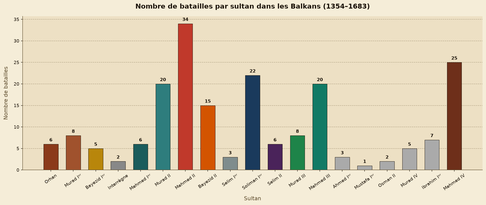
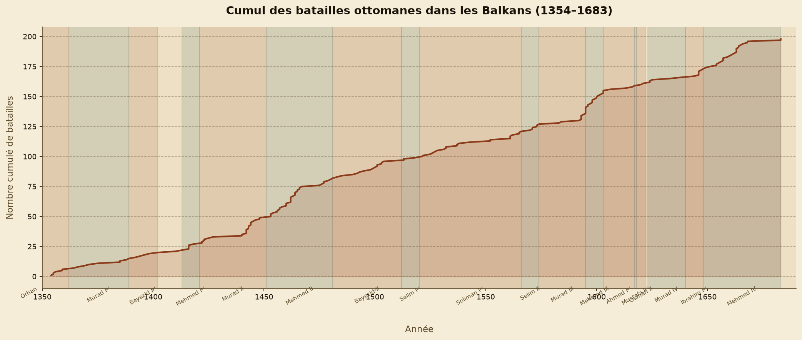
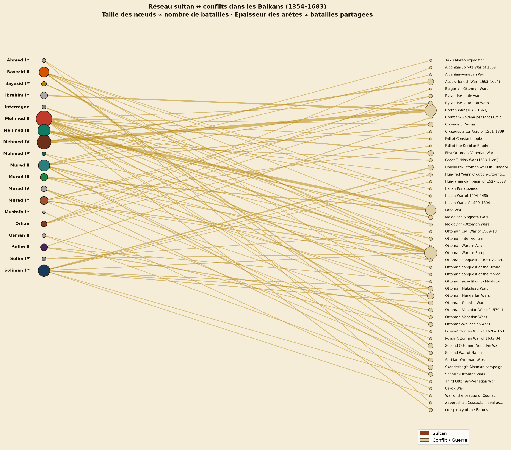

Distribution temporelle des batailles par sultan
Cette analyse quantifie l'intensité militaire de chaque règne en comptant le nombre de batailles menées dans les Balkans. Elle révèle des différences marquées d'un sultan à l'autre, reflétant leurs ambitions conquérantes respectives et le contexte géopolitique de leur époque.

Mehmed II domine largement le corpus avec 34 batailles, soit 17 % du total. Son règne (1451–1481) correspond à la phase la plus intense de l'expansion ottomane : prise de Constantinople (1453), conquête de la Grèce, de la Serbie et de la Bosnie. Mehmed IV (25 batailles) et Soliman Iᵉʳ (22 batailles) confirment cette tendance à l'intensification lors des grands règnes. À l'inverse, les sultans au règne court — Mustafa Iᵉʳ (1 bataille), Osman II (2) — ont laissé peu de traces dans le corpus.
À noter : le nombre de batailles dans Wikidata n'est pas un indicateur parfait de l'activité militaire réelle — il reflète aussi le degré de documentation disponible pour chaque période.

La courbe cumulative révèle le rythme de l'expansion : la pente s'accentue nettement sous Mehmed II (1451–1481), confirmant son règne comme le pic de l'expansion balkanique. On observe aussi une accélération sous Soliman Iᵉʳ (1520–1566) et Mehmed III (1595–1603), tandis que la période de l'interrègne (1402–1413) marque un plateau visible dans la courbe.
analyse_temporelle.py · bibliothèque Matplotlib 3.x ·
données : ottoman_balkans_battles_clean.csv (198 entrées)
Réseau sultan ↔ conflits
Cette analyse de réseau bipartite relie chaque sultan aux conflits
(part_ofLabel) dans lesquels il a participé.
La taille des nœuds est proportionnelle au nombre de batailles ;
l'épaisseur des arêtes reflète le nombre de batailles partagées
entre un sultan et un conflit donné. Sur 198 entrées, 168 ont
un conflit associé, formant un graphe de 69 nœuds et 78 arêtes.

Le réseau met en évidence les conflits transrègnaux — ceux qui traversent plusieurs sultans. Les Ottoman Wars in Europe constituent le nœud le plus connecté, reliant un grand nombre de sultans sur l'ensemble de la période. À l'inverse, certains conflits sont strictement limités à un seul règne, comme la Cretan War (1645–1669) sous Ibrahim Iᵉʳ et Mehmed IV.
Cette structure révèle que l'expansion ottomane n'est pas une série de guerres isolées propres à chaque sultan, mais un enchevêtrement de conflits durables traversant plusieurs règnes successifs.
analyse_reseau.py · bibliothèques NetworkX 3.x et Matplotlib 3.x ·
graphe bipartite, layout manuel (sultans à gauche, conflits à droite) ·
168 entrées avec conflit associé · 50 conflits uniques
Réponse à la question de recherche
Les deux analyses répondent conjointement à la question de départ. Sur le plan temporel, l'expansion ottomane dans les Balkans n'est pas linéaire : elle connaît des phases d'accélération sous les sultans les plus conquérants (Mehmed II, Soliman Iᵉʳ) et des périodes de stagnation (interrègne, règnes courts).
Sur le plan des conflits, le réseau montre que certaines guerres traversent plusieurs règnes successifs, soulignant la continuité stratégique de l'Empire au-delà des individus. Les différences entre sultans sont donc à la fois quantitatives (nombre de batailles) et qualitatives (types de conflits engagés).